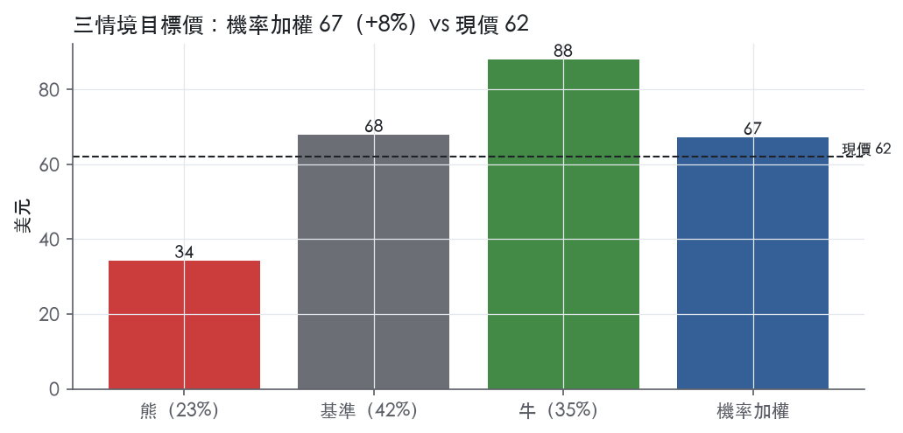
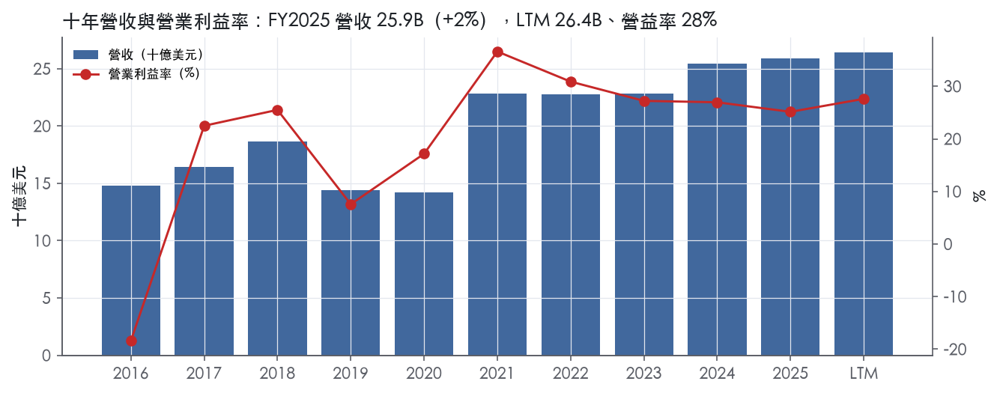
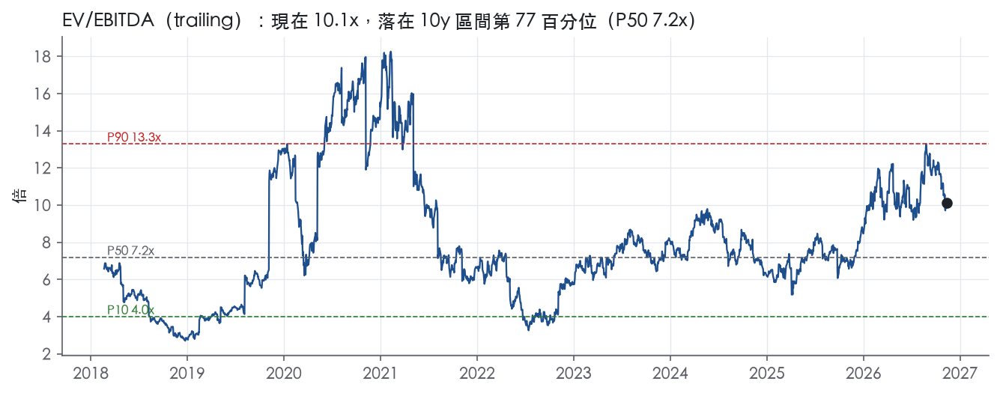
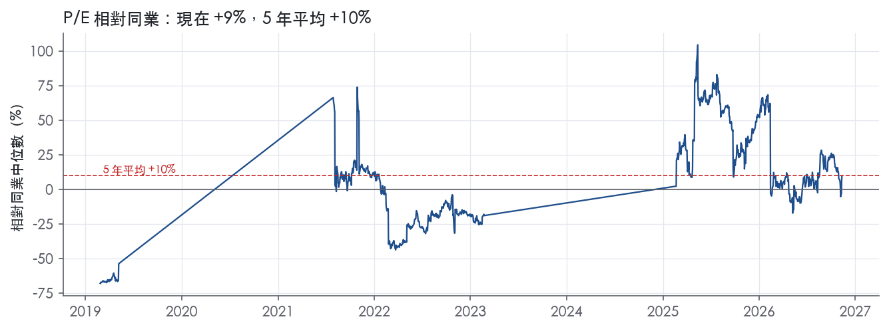
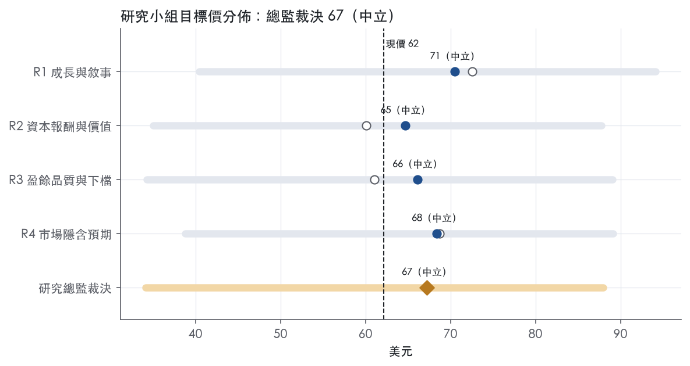
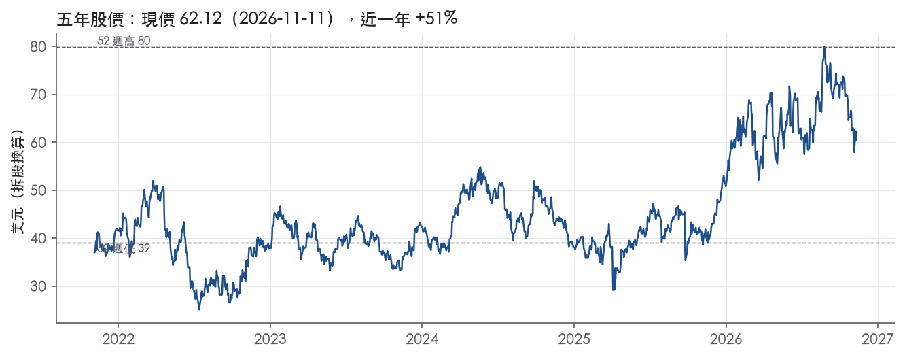

評等總表 › 原物料 › FCX
復產盈餘未入價，但週期高點盈餘只配週期中性倍數，看多幅度收斂｜評等 中立｜目標價 67
| 報告日 | 評等 | 目標價 | 當時股價 | 超額報酬 |
|---|---|---|---|---|
| 2026-11-11 | 中立 | 67.21 | 62.12 | -0.7% |
| 2026-10-02 | 減碼 | 74.86 | 72.04 | -5.5% |
| 快評 | 動作 | 結論 |
|---|---|---|
| 2026-10-27 | 維持 | EPS低於預測，一次性為主，維持減碼 |
| 評等 | 中立 |
| 12 個月目標價 | 67 美元 |
| 現價 | 62.12 美元（2026-11-11） |
| 預期報酬 | 股價 +8.2%＋股息 1.0%＝總報酬 +9.2%；同業籃門檻 9.9%，超額 -0.7% |
| 估值方法 | EV/EBITDA 7.5x，套在三年平均的EBITDA |
| 三情境 | 熊 34／基準 68／牛 88 |
| 研究流程 | 四位研究員兩輪辯論＋研究總監裁決 |
| 資料來源 | SEC EDGAR XBRL、Tiingo、FRED（全免費） |
復產盈餘未入價，但週期高點盈餘只配週期中性倍數，看多幅度收斂（研究總監裁決，四位研究員兩輪辯論後）
評等 中立｜12 個月目標價 67 美元（總監三情境機率加權 67 與研究員中位數 67 各半）｜現價 62.12（2026-11-11）
預期報酬：股價 +8.2%＋股息 1.0%＝總報酬 +9.2%。同業籃門檻 9.9%，超額 -0.7%。
估值方法：EV/EBITDA 7.5x，套在三年平均的EBITDA。三情境：熊 34（23%）／基準 68（42%）／牛 88（35%）。
立場看多而評等中立：評等看的是「預期總報酬 9.2% − 同業籃門檻 9.9%」＝超額 -0.7%，不是絕對漲跌；看多但超額不足，代表上檔已被同業的預期報酬抵銷。
什麼會讓研究總監改變看法：第四季財報再度後移 80% 產能時點，或 2027 銅銷量指引低於 3.3B 磅，轉看空；2027 單位淨現金成本指引高於 1.90 且現場成本仍在 3.2 以上，營益率 y2 降回 30% 以下、轉中性；反之若 2027 單位成本指引 ≤1.75 且現場成本回到 3.0 以下，y2 營益率回到 33%、倍數回 8.0x。
| 過去四季（實際，FY2026Q3） | 未來四季 | 第 5–8 季 | 第 9–12 季 | |
|---|---|---|---|---|
| 營收（B） | 26.4B | 31.2B | 35.3B | 36.3B |
| 營收成長 | 1.7% | 18.0% | 13.0% | 3.0% |
| 營業利益率 | 27.6% | 32.0% | 32.0% | 30.0% |
| EPS（美元） | 3.73 | 4.46 | 5.04 | 4.87 |
| EPS 成長 | 115.8% | 19.4% | 13.1% | -3.4% |
| 每股股息（美元） | 0.60 | 0.60 | 0.60 | 0.60 |
| P/E（現價） | 16.6x | 13.9x | 12.3x | 12.8x |
| 股息殖利率（現價） | 1.0% | 1.0% | 1.0% | 1.0% |
過去四季為申報數字；預測為研究總監的假設、程式計算。倍數與殖利率都用現價計算，用來看現價對應各期獲利的高低。
| 項目 | 上次（2026-10-05） | 這次（2026-11-12） | 變動 |
|---|---|---|---|
| 評等 | 減碼 | 中立 | 變動 |
| 機率加權目標價（美元） | 75 | 67 | -10.2% |
| 超額報酬 | -5.5% | -0.7% | +4.8 pp |
| 目標倍數 | 8.5x | 7.5x | — |
| 未來四季營收成長 | 18.0% | 18.0% | +0.0 pp |
| 未來四季營益率 | 32.0% | 32.0% | +0.0 pp |
| 未來四季 EPS（美元） | 4.74 | 4.46 | -5.9% |
| 熊／基準／牛機率 | 21／49／30 | 23／42／35 | — |
程式計算；「未來四季」各自從當次報告的資料起點算。研究總監逐點說明見第八章「與上次報告比較」。
| 情境 | 機率（歷史） | 故事 | 未來四季營收成長 | 第 5–8 季營益率 | 倍數 | 目標價 | 股價漲跌 |
|---|---|---|---|---|---|---|---|
| 熊 | 23%（16%） | 風險表第 1 條二次中斷（PB1S 2027 年中無法復產、Grasberg 卡在 67–70%）疊加第 2 條銅走本行下行 11,800，倍數回 3 年 P10 之上；機率 23% 為四人 22–25% 的中位 | -2.0% | 23.0% | 6.8x | 34 | -45.0% |
| 基準 | 42%（45%） | 銅 14,473 持平、金 4,000，Grasberg 80% 延到 2027 第三季，2027 銅 3.5B 磅、金 1.0M 盎司，2028 回到事故前尺度，營益率 32／32／30%，週期高點盈餘配 7.5x 週期中性倍數 | 18.0% | 32.0% | 7.5x | 68 | 9.3% |
| 牛 | 35%（39%） | 銅走本行上行 15,200、Grasberg 照公司時程 2027 年中達 80%、Bagdad 年底定案；倍數 8.5x 等於上次報告目標倍數、低於 1 年 P50 10.4x，牛情境只假設市場延續過去一年評價區間不再溢價；機率 35% 取全員上緣，不再高於全員，因復產時程已滑過一次 | 24.0% | 35.0% | 8.5x | 88 | 41.6% |
目標價由程式依研究總監的驅動與倍數計算；機率由研究總監給定。括號內是歷史頻率：把這檔股票過去十年 12 個月報酬的波動形狀，置中在基準情境，結果落在各情境附近的比例。

四位研究員用不同方法各自估值，回應研究總監的質疑後交出第二輪，最後由總監逐點裁決。各研究員的主張見第七章，裁決理由見第八章，完整論證見《研究底稿》。
| 立場（一輪→二輪） | 加權目標價（一輪→二輪） | 評等（一輪→二輪） | 第二輪倍數 | 熊～牛目標價 | |
|---|---|---|---|---|---|
| R1 成長與敘事 | 看多→看多 | 73→71 | 加碼→中立 | 8.5x | 40～94 |
| R2 資本報酬與價值 | 看空→看空 | 60→65 | 減碼→中立 | 8.0x | 35～88 |
| R3 盈餘品質與下檔 | 中性→中性 | 61→66 | 減碼→中立 | 7.5x | 34～89 |
| R4 市場隱含預期 | 中性→中性 | 69→68 | 中立→中立 | 7.2x | 39～89 |
| 研究總監裁決 | 看多 | 67 | 中立 | 7.5x | 34～88 |
目標價由程式依各自的驅動與倍數計算；評等＝機率加權總報酬 − 同業籃門檻。
Freeport-McMoRan（FCX）是一家以銅為核心、目標成為「foremost in copper」的國際金屬公司，總部位於美國鳳凰城¹。公司營運大型、長壽命、地理分散的資產，擁有顯著的銅、金、鉬探明及概略儲量，是全球最大的上市銅生產商之一¹。核心資產包括印尼的 Grasberg 礦區（全球最大銅金礦床之一）、美國亞利桑那州的 Morenci 礦區，以及秘魯的 Cerro Verde 礦場¹。公司認為銅的長期需求基本面有利，受電氣化、新興市場城市化、資料中心與 AI 成長、國防支出增加及全球連結性提升所支撐¹。客戶端以下游金屬加工商、電纜線材廠、冶煉廠及貿易商為主，FCX 本身在美國也是最大的精煉銅供應商，約占美國精煉銅總產量的 70%¹。FY2025 LTM 營收約 25.91B 美元，公司規模已從 2019 年谷底的 14.40B 美元成長近一倍。
FCX 以地理區域劃分營運：美國、南美與印尼三大區塊，分別對應不同的礦種結構與下游整合程度。2025 年合併銅、金、鉬產量依地區分配為：美國銅 39%、南美銅 31%、印尼銅 30%；金幾乎全來自印尼（98%）；鉬以美國為主（77%）¹。單一三座礦山——美國 Morenci、秘魯 Cerro Verde 與印尼 Grasberg——合計貢獻 2025 年合併銅產量的 70%¹。產品組合上，2025 年合併營收主要來自銅（75%）、金（15%）與鉬（8%）¹。銅的出貨形式中，2025 年有 43% 以銅精礦售出、33% 以陰極銅、24% 以銅桿售出¹。印尼子公司 PTFI 在 2025 年完成下游冶煉與貴金屬精煉設施後，已轉型為完全整合的精煉銅與金生產商，不再以銅精礦為主要出貨形式，而是以陰極銅與金條銷售¹。鉬方面，公司自稱是全球最大的鉬及鉬化學品生產商，產能集中於 Henderson、Climax 兩座專屬鉬礦及多座銅礦的副產鉬¹。10-K 並未揭露各分部占營收或營業利益的具體財務比重拆分，僅以產量與產品類別揭露。
過去三年（2023-2025）唯一占合併營收 10% 以上的單一客戶是三菱材料（Mitsubishi Materials Corporation），且僅在 2024 年達標，該公司是 PTFI 的合資夥伴（持有 PT Smelting 冶煉廠 34% 股權）¹。美國銅大部分在自家煉製後轉為銅桿，銷售給線纜製造商；其餘以陰極銅或精礦形式依美元計價年度合約出售，價格基準為 COMEX 月均結算價加上溢價¹。南美產出以精礦與陰極銅形式，依美元計價年度或多年合約銷售，2025 年精礦占南美銅銷售的 75%、陰極銅占 25%，定價主要依 LME 月均結算價，並扣除權利金、冶煉費與不可回收金屬折讓¹。印尼 PTFI 2025 年銅銷售中精礦占 51%、陰極銅占 49%，下游設施完工後轉為以長約銷售陰極銅，印尼境內合約以印尼盾計價、出口合約以美元計價¹。金的銷售過去主要隱含在精礦或陽極泥中，下游設施完工後改為直接銷售精煉金條，主要依倫敦 PM 金價定價¹。美國關稅政策方面，2025 年 8 月起針對半成品銅品課徵 50% 關稅，但精煉銅（陰極、精礦、廢料）獲豁免，美國政府預計 2026 年中重新評估是否自 2027 年起對精煉銅課徵 15%、2028 年升至 30% 的關稅¹。公司表示 2025 年成本未受關稅顯著影響，並持續尋找替代採購來源¹。
FY2025Q4 因 2025 年 9 月印尼 Grasberg 礦區發生泥流事故，營收降至 5.63B 美元、年減 1.5%，營益率壓縮至 14.4%（is/dv 對應 FY2025Q4），但淨利因一次性因素達 2.35B 美元、EPS 1.63。FY2026Q1 營收回升至 6.23B 美元、年增 8.8%，營益率反彈至 34.3%，反映銅價走強與部分修復進度。FY2026Q2 營收 7.03B 美元、年減 7.3%（因去年同期基期較高），毛利率 31.1%，營益率 28.5%。FY2026Q3（本季）營收 7.55B 美元、年增 8.2%，毛利率 33.8%、營益率 31.2%，單季淨利 1.17B 美元、EPS 0.81，與新聞稿揭露的「第三季淨利 1.2B 美元、每股 0.81 美元，調整後淨利 1.3B 美元、每股 0.88 美元」一致，差異主因扣除與 PTFI 泥流事故相關的稅後淨費用約 101M 美元²。第三季銅平均實現價格 6.54 美元/磅、金 4,273 美元/盎司、鉬 32.46 美元/磅，單位淨現金成本 2.07 美元/磅銅²。公司預期 2026 全年合併銷售量約 3.0B 磅銅、649 千盎司金、93M 磅鉬，其中第四季銷售約 875M 磅銅、300 千盎司金、22M 磅鉬²。公司預期 2026 全年營業現金流約 8.5B 美元（扣除約 0.6B 美元營運資金及其他用途），全年資本支出約 4.4B 美元，其中 3.0B 美元用於主要採礦專案²。截至 2026 年 9 月 30 日，合併負債總額 9.4B 美元、現金 4.3B 美元，淨負債（不含 PTFI 下游設施約 3.2B 美元負債）為 1.8B 美元²。公司 CEO Kathleen Quirk 表示 Grasberg 復工進度穩健、美洲創新瀝濾計畫持續推進，且有利的銅與鉬價格帶動強勁的毛利轉換至淨利表現²。
公司自稱策略核心是透過美洲（美國與南美）既有資產的創新瀝濾（leach）技術與資料分析提升可回收金屬量，2025 年底已達年化約 240M 磅銅的增量run rate，目標 2026 年達到 300M 磅，並相信超越此目標仍有進一步顯著增量的潛力¹。公司持續評估美國與南美銅礦的潛在擴產機會，其中 Bagdad 礦場已規劃將選礦廠產能擴增逾一倍的機會，可望增加年產銅 200M–250M 磅，增量資本支出約 3.5B 美元，並計劃於 2026 年內做出投資決策¹。公司亦在推進智利 El Abra 礦場的潛在重大擴建，以及 Safford/Lone Star 礦區的前可行性研究以尋求顯著擴產機會³。Grasberg Block Cave 地下礦的分階段復工被視為近兩年最重要的成長催化劑，公司預期 2027、2028 年將有顯著成長，目標 2027 年中達 80% 產能、2027 年底接近滿產³。公司品牌定位為「America's Copper Champion」，強調透過安全與永續方式擴大既有資產產出以提升利潤率、現金流與獲利²。整體看，FCX 的成長敘事高度依賴 Grasberg 復工進度與瀝濾創新的執行力，二者皆屬執行風險而非需求風險，若順利落地，公司在銅價維持高檔的環境下有望同時享有量增與價漲的雙重槓桿。但 Bagdad、El Abra 等棕地擴建均屬多年期資本密集專案，短期內對財報貢獻有限，主要意義在於延長資源壽命與強化長期競爭地位。目前 EV/EBITDA 10.1x、EV/Sales 3.6x 已處於近五年高分位（88.5%、87.4%），顯示市場已部分反映 Grasberg 復工與銅價上行的樂觀情境。

FCX 評為窄護城河：我們有把握其 ROIC 在未來 5 年以上高於資本成本，但沒有把握能維持 10 年以上。護城河來自兩處：礦體的規模、品位與壽命所形成的成本位置，以及不易取得的採礦特許與許可；公司並沒有定價權。公司自己也說明，銅價由 LME、COMEX 與上海期貨交易所決定，而且價格「can be volatile and cyclical」¹。趨勢判為穩定。美洲的瀝濾增量與 Bagdad 擴產選項正在強化成本位置，但 Grasberg 泥流事故與印尼特許的政治風險抵銷了這部分改善。
成本優勢是主要來源。公司表示其競爭地位建立在「the size, quality and grade of our ore bodies and our ability to manage costs compared with other producers」¹。Grasberg 礦區是全球最大的銅金礦床之一¹。Morenci、Cerro Verde 與 Grasberg 三座礦合計貢獻 2025 年合併銅產量的 70%¹。Bagdad 的儲量壽命超過 80 年，擴產研究指出可透過規模經濟降低單位淨現金成本¹。美洲的瀝濾計畫在 2025 年底達到年化約 240M 磅銅的 run rate，2026 年目標為 300M 磅¹。這些增量是從既有堆場回收金屬，不需要開發新礦體，屬於邊際成本極低的產量。Bagdad 已是美國第一座採用全自動運輸車隊的大型礦場¹。公司是全球最大的鉬及鉬化學品生產商¹。鉬與金的副產品收入可以攤薄銅的淨現金成本，這是單一金屬礦商沒有的結構性優勢。
無形資產（特許與許可）是次要來源。公司的採礦活動依地主國政府授予的特許或合約進行¹。公司必須取得監管許可與核准，才能啟動、延續與擴建營運¹。ESA 可能影響取得擴建所需聯邦許可的能力¹。FCX 提供美國約 70% 的精煉銅產量，靠的是整合的國內採礦與加工設施¹。美國的國內銷售比例要求「Because of our integrated operations, these requirements are not expected to impact our business」¹。新進者要在美國從零取得許可並建立冶煉與銅桿產能，門檻極高，因此 FCX 的棕地擴建在時間與成本上都明顯優於綠地專案。
轉換成本與網路效應不列入。銅是國際交易的同質商品，售價依交易所月均價加溢價訂定，找不到客戶被綁定的證據。
超額報酬在數字上看得到，利潤穩定性則看不到；後者正是不給「寬」的原因。ROIC 十年平均 19.3%，資本成本代理值 9.9%，平均超額 9.4%。有資料的 9 年中，有 7 年 ROIC 高於資本成本。這支持「成本位置能在多數年份賺到超額報酬」的主張。
衝突在波動度。ROIC 標準差 9.1%，最低 4.2%。FY2020 的 ROIC 為 9.5%，同樣低於資本成本。毛利率標準差 15.7%、最低 -18.2%，營益率標準差 14.8%。寬護城河應該呈現穩定的利潤率，FCX 的利潤率卻隨銅價大幅擺盪，這與「寬」的評級直接衝突。
我們仍維持「窄」而不下修為「無」，理由如下。FY2025 同時承受泥流事故與印尼出口許可到期，ROIC 仍有 18.0%。FY2021 至 FY2025 的 ROIC 分別為 37.1%、27.9%、20.5%、20.3%、18.0%（–FY2025），全部高於資本成本。另一方面，FCF 利潤率最新 4.3%，低於十年平均 8.3%；FY2025 資本支出占營收 17.3%。新投入資本的回報尚未被證實，這也是我們給「窄」而不給「寬」的原因。
目標倍數相對同業建議持平，不給溢價也不給折價。FCX 的窄護城河來自成本位置而非定價權，ROIC 仍隨銅價大幅擺盪（標準差 9.1%），無法用護城河撐起高於同業的倍數；但長壽命、低成本的儲量也沒有理由折價。目前 EV/EBITDA 10.1x 已位於自身 5 年分位 88.5%，任何高於這個水準的目標倍數，都必須以 Grasberg 復工與銅價假設為依據，而不能歸因於護城河。
| 指標 | 最新 | 十年平均 | 標準差 | 最低 | 最高 |
|---|---|---|---|---|---|
| ROIC | 18.0% | 19.3% | 9.1% | 4.2% | 37.1% |
| 毛利率 | 28.2% | 22.5% | 15.7% | -18.2% | 38.6% |
| 營業利益率 | 25.2% | 20.1% | 14.8% | -18.4% | 36.6% |
| FCF 利潤率 | 4.3% | 8.3% | 8.6% | -8.1% | 24.5% |
| ROE | 22.8% | 24.0% | 12.8% | -2.0% | 44.4% |
程式計算。資本成本代理值（10 年債＋5%）：9.9%；ROIC 平均減資本成本：9.4%；ROIC 有資料的 9 年中，高於資本成本 7 年。
FCX 的營業現金流／淨利 LTM 1.05x、近三年 1.46x，均在綠燈區，顯示盈餘有現金支撐。但自由現金流／淨利 LTM 僅 0.37x、近三年 0.31x，低於十年均值 1.17x，被計分表標為紅燈。這個缺口主要是資本支出週期性墊高所致，而非盈餘造假，因此評為「中」而非「低」。
應計比率 LTM -0.5%、近三年 -3.6%，均優於綠燈門檻 0.0%，代表淨利沒有被應計項目灌水，現金實際上比帳列淨利更保守。FY2025 全年 CFO 5.61B 對淨利 4.15B，CFO/NI 高於 1x，支持盈餘品質（資料包年度表）。但 FY2025 FCF 僅 1.12B，資本支出占營收比重達 17.3%（資料包年度表），這是把現金吃掉的主因。8-K 揭露 2026 全年資本支出預估 4.4B，其中 3.0B 用於重大採礦專案（含 Bagdad 擴產、Grasberg 復工）²，顯示目前處於投資高峰期，FCF/NI 偏低是擴產週期的結構性結果，不是盈餘品質變差。
2026 年第三季 GAAP 歸屬淨利 1,174M、每股 0.81，調整後淨利 1,300M、每股 0.88，差額來自稅後淨費用 101M（每股 0.07），主要是 PTFI 2025 年 9 月泥流事故相關的閒置設施與復原成本²。這類費用屬於一次性意外事件，我認為可以加回評估經常性盈餘能力。新聞稿同時揭露兩項會影響 GAAP 數字但未加回非 GAAP 淨利的技術性調整：暫定計價銅／金銷售的有利調整（第三季 52M，對淨利 17M）與公司內部銷售遞延利潤變動（第三季 24M，對淨利 8M）²。這兩項屬於正常商業模式下的計價時點差異，金額相對小，我視為會計口徑而非盈餘操縱。整體而言，調整後 EPS 與 GAAP EPS 差距不大（0.88 對 0.81），非 GAAP 膨脹幅度有限，可信度較高。
淨負債／EBITDA LTM 0.54x、近三年 0.58x，遠低於 1.50x 綠燈門檻，槓桿非常保守。截至 2026 年 9 月 30 日，總債務 9,398M、現金 4,335M（8-K），其中淨負債 1.8B（扣除 PTFI 下游設施的 3.2B 專案債務後）²。利息保障倍數無法計算（計分表顯示「—」），但考慮到槓桿倍數極低，付息能力不構成關注點。稀釋股數年變動 LTM -0.1%、近三年 -0.2%，顯示公司持續小幅回購、沒有稀釋壓力。第三季回購 1.4M 股、花費 102M（均價 70.75），前九月合計回購 4.9M 股、花費 305M（均價 62.69）²。（股利＋回購）／淨利 LTM 19.9%、近三年 22.5%，屬黃燈，代表公司把多數現金留在資本支出上而非回饋股東，這與前述擴產計畫一致，不是現金枯竭訊號。
自由現金流／淨利紅燈（LTM 0.37x、近三年 0.31x）：這是真實但可解釋的現象——FCX 正處於資本支出高峰，2023-2025 年資本支出／營收維持在 17%-21%（資料包年度表），加上 2026 年資本支出指引 4.4B 中 3.0B 投入成長型專案，FCF 被壓低屬於投資週期而非盈餘灌水。十年均值 FCF/NI 達 1.17x 也證明過去低資本支出年度現金轉換是正常的，問題是週期性的，不是結構性的。
應收帳款成長比營收快 67 個百分點（FY2025）：這條紅旗值得關注但提供的 10-K 節錄沒有直接拆解應收帳款變動原因，只能從營運脈絡推論。FY2025 PTFI 因 2025 年 9 月泥流事故停產，Grasberg Block Cave 地下矿预计在 2026 年第二季才展開分階段復工¹，同時 PTFI 下游冶煉與貴金屬精煉設施在 2025 年完工，銅銷售形式由精礦轉為陰極、計價與出貨時點規則也改變（由「出貨後一到四個月」縮短為「出貨後一到兩個月」）¹。這類生產中斷＋銷售結構轉換很容易讓應收帳款與存貨的期末餘額暫時脫節於營收成長，我傾向判定為一次性／營運面因素而非盈餘品質惡化，但無法用提供的 10-K 段落完全證實金額歸因，需要在後續更新中追蹤 FY2026 應收帳款是否回到正常節奏。
淨利率 FY2016→FY2017 跳動 +40pp：FY2016 淨利率為大幅虧損（淨利 -4.03B／營收 14.83B），FY2017 轉為正值（淨利 2.10B／營收 16.40B）（資料包年度表）。FY2016 CFO 仍有 3.74B 正值，淨利與現金流落差巨大，顯示 FY2016 虧損主要來自非現金減損或一次性項目，FY2017 回升反映商品價格回升帶動營運槳桿效益，屬於合理的週期性恢復，不是盈餘操縱。
淨利率 FY2018→FY2019 跳動 -17pp：FY2019 營收由 18.63B 驟降至 14.40B（-22.7%），淨利同步轉為小幅虧損（資料包年度表）。10-K 明確指出銅價「可能劇烈波動且具週期性」，由 LME、COMEX 等交易所決定¹，FY2019 全球銅價走弱是可觀察的外部因素，营业杠杆放大了利潤率下滑，屬於商品價格週期，不是會計問題。
淨利率 FY2020→FY2021 跳動 +17pp：FY2021 營收大增 60.9%、淨利率由個位數彈升至高點（資料包年度表）。這與 2021 年全球銅價因經濟復甦、電氣化需求上升而走高的大環境一致，10-K 也強調電氣化、都市化、數據中心與 AI 需求是銅需求結構性上升的主因¹，FY2021 的跳升屬於價格與營運槳桿共同驅動，解釋充分。
估值研究員應該用 GAAP 淨利搭配量化底稿的現金流數據交叉驗證，而不是單純採用公司調整後 EPS，因為非 GAAP 加回項目（主要是泥流事故相關費用 101M）金額有限、調整幅度不大，GAAP 數字本身已相對乾淨。但 FCF 持續低於淨利反映資本支出高峰期尚未結束（2026 年指引 4.4B），估值模型若用 FCF 殖利率（目前 2.4%，trailing）做基準，應該理解這是壓低後的數字，隨 Bagdad、El Abra 擴產與 Grasberg 復工完成，FCF 轉換可望回升，不宜對盈餘本身打太重折扣。槓桿極低（淨負債／EBITDA 0.54x）不構成限制倍數的理由，但目前 EV/EBITDA 10.1x 已位於五年區間 88.5% 分位，偏貴，加上 AR 異常與商品週期敏感度，建議對短期盈餘可持續性保留一定保守假設，而非直接套用 LTM 數字做永續估值。
| 項目 | LTM | 近三年 | 十年 | 燈號 | 規則 |
|---|---|---|---|---|---|
| 營業現金流／淨利 | 1.05x | 1.46x | 0.53x | 綠 | ≥1.00x 綠、<0.80x 紅 |
| 自由現金流／淨利 | 0.37x | 0.31x | 1.17x | 紅 | ≥0.90x 綠、<0.60x 紅 |
| 應計比率（(淨利−CFO)／平均總資產） | -0.5% | -3.6% | -4.0% | 綠 | ≤0.0% 綠、>5.0% 紅 |
| SBC／營收 | 0.6% | 0.5% | 0.5% | 綠 | ≤3.0% 綠、>8.0% 紅 |
| 淨負債／EBITDA | 0.54x | 0.58x | -8.95x | 綠 | ≤1.50x 綠、>3.00x 紅 |
| 利息保障倍數（營業利益／利息） | — | — | — | — | ≥8.00x 綠、<3.00x 紅 |
| 稀釋股數年變動 | -0.1% | -0.2% | 1.1% | 綠 | ≤0.0% 綠、>3.0% 紅 |
| （股利＋回購）／淨利 | 19.9% | 22.5% | -0.6% | 黃 | ≥50.0% 綠、<0.0% 紅 |
| 應收帳款成長 − 營收成長（FY2025） | +67.2pp | — | — | 紅 | ≤5pp 綠、>15pp 紅 |
程式計算；燈號以 LTM（無則近三年平均）判定。
| 風險 | 觸發指標（看什麼數字、在哪裡看） | 對 EPS 的影響方向與粗略幅度 | 未來 12 個月發生機率（高／中／低） | 出處 |
|---|---|---|---|---|
| Grasberg Block Cave 復工不如預期，印尼貢獻約 30% 銅產量、98% 金產量的礦區二次中斷 | PTFI 分項產量／季報揭露的「85% 正常產能於下半年恢復」進度、Production Block 2/3 里程碑達成與否 | 負向、大：2025Q4 單季營益率已因此從常態 25-30% 壓至 14.4%，EPS 波動幅度達 0.2-0.6 美元/季等級 | 中 | ⁴¹ |
| 銅價回落：目前 EV/EBITDA 10.1x 已處於近五年 88.5% 分位，estimize 建立在 6.5 美元/磅高價基礎上 | LME／COMEX 月均結算價、公司季報「average realized price per pound」 | 負向、大：2025 年平均 4.51 美元/磅時 EBITDA 8.76B，2026Q3 單季均價 6.54 美元/磅時 EBITDA 2.87B，價格每變動對 EBITDA 槓桿明顯 | 中 | ¹² |
| 美國精煉銅關稅 2027 年起 15%、2028 年升至 30%，疊加國內銷售比例要求（2027 年起 25%、逐年升至 40%） | 2026 年中政府重新評估公告、Federal Register 關稅稅率生效日 | 負向、方向不明確但公司自估「2025 年成本未顯著受影響」；若 2027 年落地將改變美國銷售定價基準 | 中 | 10-K 年報 FY2025 Item 1（業務） |
| 印尼 IUPK 礦權延長（現行至 2041，申請延長需 2026 年內提出）與出口許可／稅負條件變動 | PTFI 延長申請提交進度、Indonesia 政府回應、出口許可到期日（2025-09-16 已到期一次） | 負向、中：若延長不順或條件轉嚴，影響長期資產壽命估值，短期衝擊較小 | 低 | 10-K 年報 FY2025 Item 1（業務） |
| 環保／安全法規成本上升：Copper Smelter Rule、Silica Rule 重新評估、PFOS/PFOA 危害物質認定 | EPA／MSHA 公告之提案規則內容與合規期限、Miami 冶煉廠兩年豁免到期日（2027年10月前後） | 負向、小至中：公司稱「可能顯著」但未給數字，2025 年環保資本支出僅 0.5B 美元，2026 年估 0.7B 美元 | 低 | 10-K 年報 FY2025 Item 1A（風險因素） |
風險一：Grasberg 二次中斷/復工延誤。2025 年 9 月的泥流事故已造成 7 人死亡與礦區全年停擺¹，公司計劃 2026Q2 起分階段復工 Production Block 2、3，2027 年才評估 Block 1，並預期下半年恢復約 85% 正常產能¹。Grasberg 占 2025 年合併銅產量 30%、金產量 98%¹，是公司唯一的金收入來源地，任何二次延誤都會直接壓縮毛利率——2025Q4 的實例是營益率從常態 25-30% 掉到 14.4%【判（量化底稿 FY2025Q4）】。這是五條風險中影響幅度最大、且與公司 2027-2028 成長敘事（市場已用高分位倍數反映）最直接掛鉤的一條。
風險二：銅價週期性回落。10-K 明確指出銅價「可能波動且具週期性」，由 LME/COMEX/上海期交所決定¹。目前股價隱含的 EV/EBITDA 10.1x 已站在近五年 88.5% 分位，顯示市場已把 2026Q3 的高實現價（6.54 美元/磅）視為常態，而非週期高點。歷史上公司 EBITDA 在銅價走弱年份（如 FY2019 銅價走弱，EBITDA 降至 2.50B）會快速收縮，槓桿效應明確。若銅價從目前高檔回落到過去五年中位數，EPS 將明顯低於市場目前隱含的高倍數假設。
風險三：美國關稅與國產配額政策。2025 年 8 月起針對半成品銅品課徵 50% 關稅，但精煉銅（陰極、精礦、廢料）暫時豁免；美國政府將在 2026 年中重新評估是否自 2027 年起對精煉銅課稅 15%、2028 年升至 30%，同時擬要求國內銅陰極與精礦銷售比例逐年提高至 2029 年 40%¹。公司自稱因「垂直整合」此要求「不預期影響業務」¹，但若 2027 年關稅真正落地，將改變美國對外銷售的定價基準與貿易流向，方向難料，需緊盯政策公告日期。
風險四：印尼礦權延長與監管環境。現行 IUPK 至 2041 年到期，公司已在準備延長申請，預計 2026 年內提出，延長後持股結構將在 2042 年後降至約 37%¹。此外出口許可曾於 2025-09-16 到期並造成銷售方式轉變（改以陰極銅、金條長約銷售取代精礦）¹，顯示印尼政策環境本身具有不確定性，但衝擊時間軸拉得較長，12 個月內實質衝擊 EPS 的機率較低。
風險五：環保與職安法規成本。Copper Smelter Rule、MSHA 矽塵規則（Silica Rule）均處於「重新評估」狀態，尚未定案⁴。Miami 冶煉廠已獲得兩年合規期限豁免（2025 年 10 月總統公告）¹，意味此風險的實質財務衝擊時間點被往後推遲，12 個月內發生機率偏低，但一旦法規定案，公司自承「costs involved, which could be significant」⁴。
現價 62.12 對應 trailing（過去四季）P/E 16.6x、EV/EBITDA 10.1x、EV/EBITA 13.0x、EV/Sales 3.6x、FCF 殖利率 2.4%。主要估值倍數 EV/EBITDA 現在 10.1x，落在10 年區間第 77 百分位（P10／P50／P90 = 4.0x／7.2x／13.3x）。

把程式的機械基準預測放到現價下，市場付的前瞻倍數是：EV/EBITDA（未來四季） 10.0x、P/E（未來四季） 17.6x、EV/EBITDA（第 5–8 季） 9.8x、P/E（第 5–8 季） 17.4x。反推 DCF 顯示市價隱含未來五年營收年成長 16.0%（WACC 9.0%、終值成長 3.0%、FCF 利潤率 10.1%，SBC 不加回）。
| 倍數 | 現在 | 10 年 P10 | 10 年 P50 | 10 年 P90 | 現在分位 | 全期 P50 |
|---|---|---|---|---|---|---|
| P/E | 16.6x | — | — | — | — | 19.8x |
| EV/EBITDA | 10.1x | 4.0x | 7.2x | 13.3x | 77.4% | 7.2x |
| EV/EBITA | 13.0x | 5.3x | 10.1x | 28.8x | 68.1% | 10.1x |
| EV/EBIT | 13.0x | 5.3x | 10.1x | 28.8x | 68.1% | 10.1x |
| EV/Sales | 3.6x | 1.4x | 2.5x | 3.6x | 88.6% | 2.5x |
| P/S | 3.4x | 1.0x | 2.3x | 3.4x | 90.7% | 2.3x |
| P/FCF | 41.6x | — | — | — | — | 27.3x |
trailing 倍數（股價 ÷ 過去四季）；分位以每個交易日計算。
同業籃：SCCO, NEM, TECK, AA, NUE（手動名單（playbooks/peers.yaml））。評等門檻 9.9%：同業「倍數不變下持有一年」的隱含報酬中位數（＝ FCF 殖利率 ×(1＋g)＋g，g 為 5 年營收年複合成長並夾在 −2%～8%），每家夾在 0～15%、P/E 低於 5 倍視為資料可疑而排除，中位數再限制在 10 年債到 10 年債＋5% 之間（同業原始中位數 13.9%）；排除：TECK（隱含報酬算不出來）。
| 代號 | 市值 | 5 年營收 CAGR | 營益率 | ROIC | P/E | 5 年 P/E 中位數 | EV/EBITDA | P/FCF | 隱含報酬 |
|---|---|---|---|---|---|---|---|---|---|
| FCX | 89.6B | 12.8% | 27.6% | 18.0% | 16.6x | 21.5x | 10.1x | 41.6x | 10.6% |
| SCCO | 144.7B | 10.9% | 58.6% | 36.7% | 22.5x | 20.7x | 13.2x | 25.8x | 12.2% |
| NEM | 124.5B | 14.5% | 51.8% | 21.8% | 13.8x | — | 7.4x | 12.4x | 16.7% |
| TECK | — | — | — | — | — | — | — | — | — |
| AA | 10.9B | 6.7% | 12.4% | 0.1% | 7.1x | — | 4.6x | 12.3x | 15.4% |
| NUE | 58.8B | 10.0% | 13.5% | 9.0% | 16.6x | 9.8x | 9.2x | 22.1x | 12.9% |
| 同業中位數 | 10.5% | 32.7% | 15.4% | 15.2x | 15.3x | 8.3x | 17.2x | 9.9% |
全部 trailing，程式以各公司 SEC XBRL 與 Tiingo 行情計算；第一列為本檔。
P/E 相對同業中位數：現在 9.4%，過去 1 年平均 18.0%、3 年 —、5 年 10.1%；EV/EBITDA 相對同業中位數：現在 21.5%，過去 1 年平均 -22.2%、3 年 -39.1%、5 年 -34.3%。

程式的機械基準（成長率從過去四季年增率三年收斂到 6%、利潤率持平）用 EV/EBITDA 10 年 P50（trailing） 估值得到 46（-25.6%），用現行倍數得到 66。這兩個數字只是參考點，不是本報告的目標價；研究員對這個定價的回應在第七章。
下表是每位研究員第一輪（各自獨立）與第二輪（回應研究總監的質疑後）的結果。目標價全由程式依各自的假設計算。
| 立場（一輪→二輪） | 加權目標價（一輪→二輪） | 評等（一輪→二輪） | 第二輪倍數 | 熊～牛目標價 | |
|---|---|---|---|---|---|
| R1 成長與敘事 | 看多→看多 | 73→71 | 加碼→中立 | 8.5x | 40～94 |
| R2 資本報酬與價值 | 看空→看空 | 60→65 | 減碼→中立 | 8.0x | 35～88 |
| R3 盈餘品質與下檔 | 中性→中性 | 61→66 | 減碼→中立 | 7.5x | 34～89 |
| R4 市場隱含預期 | 中性→中性 | 69→68 | 中立→中立 | 7.2x | 39～89 |
| 研究總監裁決 | 看多 | 67 | 中立 | 7.5x | 34～88 |
目標價由程式依各自的驅動與倍數計算；評等＝機率加權總報酬 − 同業籃門檻。
分歧度：第一輪 加權目標價 60～73（區間＝現價的 20%）· 倍數 7～9x · 立場 看多×1、看空×1、中性×2；第二輪 加權目標價 65～71（區間＝現價的 9%）· 倍數 7.2～8.5x · 立場 看多×1、看空×1、中性×2。

| 研究員 | 第二輪主張 | 堅持的理由 |
|---|---|---|
| R1 成長與敘事 | 看多，EV/EBITDA 8.5x，用未來一年盈餘計價。 | 不改用週期中性盈餘，因為那會抹掉產量回升攤薄固定成本的效果。 |
| R2 資本報酬與價值 | 看空，EV/EBITDA 8.0x，錨在自家三年中位數 7.9x。 | 倍數不往現行 10.1x 靠，量能回升已算進盈餘，不再重複給倍數。 |
| R3 盈餘品質與下檔 | 中性，EV/EBITDA 7.5x，量能回升多半已反映在股價。 | 少數股東與印尼法規風險仍在，倍數不抬到同業中位數 8.3x。 |
| R4 市場隱含預期 | 中性，EV/EBITDA 7.2x，錨在自家十年中位數。 | 市場低估復產後營益率，第二年 33% 高於市場隱含的 26.1%。 |
每位研究員的逐條回應與完整論證見《研究底稿》（FCX_研究底稿_2026-11-12.docx）。
| 分歧點 | R1 | R2 | R3 | R4 | 什麼資料會分出勝負 |
|---|---|---|---|---|---|
| NTM 營收成長（rev_growth_y1） | 18% | 10% | 18% | 18% | 2026Q4 銅／金銷量對指引 875M 磅／300 千盎司（2027-02-15） |
| Q5–Q8 營收成長（rev_growth_y2） | 14% | 8% | 11% | 13% | 2027 全年銅銷量指引（2027-02-15）；2027 年中 Grasberg 80% 里程碑 |
| 營益率 y1／y2／y3 | 31／32／30 | 31／31／27 | 30／31／28 | 32／33／32 | 2027 單位淨現金成本指引對 2026 的 1.90；現場成本是否仍 >3.2 |
| 目標倍數與口徑 | 8.5x@ntm | 8.0x@mid | 7.5x@mid | 7.2x@mid | 2027 資本支出指引（資本密度）；一年後 trailing EV/EBITDA |
| 熊情境定義與機率 | 自訂，25% | 風險表 1，24% | 風險表 1+2，22% | 自訂，23% | 2027 年中 PB1S 復產與否；銅是否走本行下行 11,800 |
一、NTM 營收成長：裁 R4，18%。 三位 18%，只有 R2 10%。R2 的缺口是沒有銷量橋：LTM 營收 26.44B含事故低谷季 FY2025Q4 的 5.63B，而第四季指引是銅 875M 磅、金 300 千盎司，對比第三季實際 749M 磅、105 千盎司²。基期效應加金銷售回補，10% 連基期都蓋不住。三人數字相同而選 R4，是因為他的營收絕對誤差中位數最小（2.1%，預測紀錄）。
二、Q5–Q8 營收成長：裁 R4，13%。 R1 與 R3 的銷量橋相同（2027 年銅 3.5B 磅、金 1.0M 盎司；2028 年 3.9B 磅、1.3M 盎司，假設），卻一個 14%、一個 11%：R1 把瀝濾「進一步顯著增量」算進去，但公司只給潛力語言、沒有數字¹；R3 以「基期抬高」壓低，但基期效應已在 NTM 的 18% 用掉。R4 的 13% 對應同一座橋（2028 回到事故前尺度：2025 前九月銅 2,865M 磅、金 986 千盎司²）而不加潛力。R2 的 8% 等於認定 2028 回不到事故前尺度，但 8-K 明寫「2027 與 2028 顯著成長」，他沒有相反證據。
三、營益率：y1 32%、y2 33% 裁 R4；y3 30% 裁 R1。 第三季在金只賣 105 千盎司、且含泥流事故閒置費用（稅後 101M）的情況下，營益率已 31.2%；第四季金指引 300 千盎司，全年單位淨現金成本指引 1.90 已含這筆抵減²。R2、R3 的 31% 等於假設金量回補不改善利潤率。預測紀錄也站在 R4 這邊：R1、R2、R3 的營業利益誤差中位數 -2.8%、-4.5%、-3.0%，系統性偏低；R4 +0.9%、勝過基準 73%。R4 的缺口在 y3：Q9–Q12 超出本行前提覆蓋期，銅位在第 100 百分位、風險偏下（總經指引），mid_cycle 口徑要求部分回歸，32% 等於三年不回歸，且他自承現場成本 3.24 對 2.71 的通膨成分拆不出來。R2 的 27%、R3 的 28% 回歸過頭——R2 在 V5 已承認這種幅度隱含銅價下跌、與本行基準矛盾。R1 的 30% 與前提一致。
四、目標倍數：裁 R2，8.0x EV/EBITDA @ mid_cycle。 劇本主尺是 ebitda@mid_cycle；R1 改用 ntm 的理由（mid_cycle 會把營益率拉回 25.3%）不成立，那是基準模型的規則，驅動層可覆蓋，口徑本身不變，退回。錨取自家 3 年 P50 7.9x而非 R3、R4 的 10 年 P50 7.2x：10 年窗含 FY2016 虧損與 FY2019 轉換期（4.2%），而 FY2021–FY2025 的 ROIC 全部高於資本成本（–FY2025）、淨負債／EBITDA 0.54x（財務體質章），3 年窗才涵蓋現在的資本密度（–FY2025 為 17–21%）。高於 7.9x 的 0.1x 來自瀝濾增量幾乎不需新資本。低於現行 10.1x 與零報酬 9.5x 的理由全是個股因素：復產完成後成長降檔（y3 3%）、IUPK 延長後 FCX 經濟份額降至約 37%¹、mid-cycle 盈餘已含量能回升與第 100 百分位銅價，倍數再給一次是重複計算。相對同業：護城河章判持平，但同業中位數 8.3x 被 NEM、AA、NUE 拉歪，不作錨；對 SCCO 13.2x 的折價對應 ROIC 18.0% 對 36.7% 與 NCI 口徑。R3 的 7.5x 缺口在「五年對同業折價 34.3% 的原因仍在」用的正是他自己判定失真的同業樣本。
五、熊情境與機率：情境裁 R3，機率 own 20%。 R1、R4 的熊情境自承「無風險表」，不符規則。R2 與 R3 都對應風險表第 1 條，但 R3 寫出機制（PB1S 2027 年中無法復產、Grasberg 卡在 67–70%，疊加第 2 條銅走 11,800）且觸發日期明確；R2 的 22% 營益率沒有機制。機率上 R1 把本行下行路徑 25% 直接等於熊機率，缺的是條件：銅走 11,800 而復產正常，依程式敏感度（銅每 10% 對應 -10.4%，t 值 5.6）換算的跌幅不及熊情境一半距離，要進熊區還得復產同時失敗。程式對四位的歷史對照熊區為 19–21%，我給 20%。
漂移與總經偏離。 R2、R3 向中位數靠攏 53%、66%，但每一項變動都附了我轉發的證據（單位淨現金成本 2.07 對 1.40、銷量橋、歷史對照表），不是無證據靠攏，不退回；R1、R4 靠攏 18%、5%。四位 macro_deviations 均為空，銅 14,473／15,200／11,800 與美元 121.3 全引自本行前提，接受；我亦無偏離。
| 驅動 | 基準 | 裁決 | 出處與理由 |
|---|---|---|---|
| rev_growth_y1／y2／y3 | 3.1／4.6／6.0% | 18／13／3% | R4；分歧一、二；y3 復產完成後降檔，Bagdad 不計入三年 |
| op_margin_y1／y2／y3 | 26.9／26.1／25.3% | 32／33／30% | y1、y2 R4；y3 R1；分歧三 |
| capex_pct_rev | 15.4% | 17% | R4；2026 指引 4.4B 含主要專案 3.0B²，Bagdad 增量 3.5B 投資決策在 2026 年內¹ |
| tax_rate | 30% | 35% | R3；基準值夾在上限代表近三年中位數至少 30%，35% 只含稅負不含 NCI；對主尺 EBITDA 無影響，只透過 FCF 影響期末淨負債 |
商品價格假設（劇本要求明列）：銅 14,473 美元／公噸持平、美元廣義指數 121.3（本行前提）；金用公司第四季假設 4,000 美元／盎司²。
目標倍數 8.0x EV/EBITDA，期間口徑 mid_cycle（三年平均，劇本 override），EV 基準減 NTM 期末淨負債。錨是 trailing 3 年 P50 7.9x，trailing 帶配 mid_cycle 是劇本規定的主尺。分資產 NAV 材料缺，四位均列補件，本次無法交叉驗證。相對同業不溢不折（護城河章）。
機率對照：程式對四位的歷史對照為牛區 35–38%、基準區 41–47%、熊區 19–21%，我的 37／43／20 貼著歷史，牛高於熊，與這檔股票十年上漲比例 62% 一致，也修正本部 22 份報告熊大於牛的慣性。牛不給更高，是因為復產時程已滑過一次（10-K「2026 下半年約 85%」改為 8-K「2027 年中 80%」¹），牛情境需要它不再滑。熊 20% 對應風險表第 1 條，觸發日期 2027 年中；本行總經下行 25% 不直接映射成熊機率，理由見分歧五。
差在盈餘，不在倍數。市場隱含的 NTM EV/EBITDA 10.0x 是套在基準模型 3.1% 成長、26.9% 營益率的 EBITDA 上；我們的 NTM 是 18% 成長、32% 營益率，差距來自第四季指引的量回補（銅 875M 磅、金 300 千盎司）與金副產品抵減，這部分現價還沒付錢。倍數上我們站在市場之下（8.0x 對零報酬 9.5x），所以這份看多不是賭重評，是賭復產盈餘兌現；R4 用幾乎相同的盈餘路徑配 7.2x 只得 67.26（+8.3%，程式結果表），看多與中性的分水嶺就是這 0.8x 的錨選擇。立場看多；若程式評等落在中立，原因是熊情境是「二次中斷加銅下行」同時發生的深度情境、拉低了加權，而基準情境本身超過門檻 9.9%，且三個月內有可證偽的催化（2027-02-15 的第四季銷量與 2027 指引）。
程式檢查發現，總監最初裁決的機率加權目標價 73 落在四位研究員第二輪區間 65～71 之外，可能是逐點選邊的拼湊效應。總監複核後決定修正（最終 67）：基準情境把 R4 的最高營益率路徑接上 R2 的 8.0x，但 R2 的倍數是配 27% 回歸盈餘、R4 的高盈餘是配 7.2x，組合後週期高點盈餘與週期中性倍數被重複計入；牛取最高且機率最高、熊取最深卻機率最低，三情境同向傾斜。修正：y2 營益率 33%→32%、倍數 8.0x→7.5x（錨偏向 10y P50）、牛倍數 9.0x→8.5x、機率 37/43/20→35/42/23。
逐項對照後，基準情境有一處機制矛盾，三情境有一致的傾斜：
1. 盈餘路徑與倍數來源不相容。 我的 y1／y2 營益率 32／33% 取自 R4，是四人中最高；倍數 8.0x@mid_cycle 取自 R2。但 R2 的 8.0x 是配著 31／31／27% 的回歸路徑提出的，他的邏輯是「mid-cycle 倍數配 mid-cycle 盈餘」；R4 用同一條高利潤率路徑時，配的是 10 年 P50 的 7.2x，邏輯是「週期高點盈餘配週期中性倍數」。兩位各自自洽，我把 R4 的盈餘接上 R2 的倍數，等於同時吃到週期高點的盈餘與週期中性的倍數。我自己在裁決裡寫了「mid-cycle 盈餘已含第 100 百分位銅價，倍數再給是重複計算」，卻只用它來拒絕 9.5x，沒有真的扣下來。3 年 P50 7.9x 是市場在營益率約 27% 時付的價，不是在 32–33% 時付的價。
2. y2 的 33% 在證據外延伸。 第三季 31.2% 加第四季金回補支持 y1 32%，但 y2 再升一個百分點，前提是 2027 單位成本指引與現場成本通膨拆分，這兩項資料都還沒有，R4 自承拆不出來。
3. 三情境同向傾斜。 牛取 R1（最高，93 對四人 88–94）、機率 37% 高於全員（33–35%）；基準 73 高於全員（62–70）；熊取 R3（最深，34）卻給全員最低的 20%（他們 22–25%）。歷史基準率「熊區 14%」是以我自己偏高的基準為中心算出來的，不能回頭證明 20% 保守。
結論：這不是「四個人同時錯在同一邊」，而是逐點選邊的拼湊效應。
立場維持看多但幅度收斂，評等交由程式；若落在中立，分水嶺就是「週期高點盈餘該配哪一段倍數帶」，三個月內的第四季銷量與 2027 成本指引會給答案。
現價 62.12 → 點估目標價 68 → 機率加權目標價 67 → 目標價 67，差距拆成五段：成長順延 +0 美元（市場現行倍數 9.5x 一年後持平、獲利照機械基準）；倍數差 -14 美元（總監倍數 7.5x vs 市場持平倍數 9.5x，同一機械基準預測）；盈餘差 +20 美元（總監預測的三年平均EBITDA 13.4B vs 機械基準 9.7B，同一倍數）；情境不對稱 -1 美元（機率加權減點估）；研究小組平均 +0 美元（總監機率加權 67 與研究員第二輪中位數 67 各半）。各段相加等於目標價減現價。本階段未接賣方共識，差距以市場隱含預期為對照。
| 驅動 | 機械基準 | 研究總監 | 差異 |
|---|---|---|---|
| 未來四季營收成長 | 3.1% | 18.0% | +14.9 pp |
| 第 5–8 季營收成長 | 4.6% | 13.0% | +8.4 pp |
| 第 9–12 季營收成長 | 6.0% | 3.0% | -3.0 pp |
| 未來四季營益率 | 26.9% | 32.0% | +5.1 pp |
| 第 5–8 季營益率 | 26.1% | 32.0% | +5.9 pp |
| 第 9–12 季營益率 | 25.3% | 30.0% | +4.7 pp |
| D&A／營收 | 7.7% | 7.7% | ＝ |
| 資本支出／營收 | 15.4% | 17.0% | +1.6 pp |
| SBC／營收 | 0.6% | 0.6% | ＝ |
| 稅率 | 30.0% | 35.0% | +5.0 pp |
| 股數年變動 | -0.1% | -0.1% | ＝ |
研究總監只寫偏移，未寫的沿用基準。
| 期 | 營收 | 成長 | 營益率 | 營業利益 | EBITDA | EBITA | 淨利 | EPS | FCF | 期末淨負債 |
|---|---|---|---|---|---|---|---|---|---|---|
| 未來四季 | 31.2B | 18.0% | 32.0% | 10.0B | 12.4B | 10.0B | 6.5B | 4.46 | 3.8B | 2.5B |
| 第 5–8 季 | 35.3B | 13.0% | 32.0% | 11.3B | 14.0B | 11.3B | 7.3B | 5.04 | 4.3B | -0.6B |
| 第 9–12 季 | 36.3B | 3.0% | 30.0% | 10.9B | 13.7B | 10.9B | 7.1B | 4.87 | 3.9B | -3.4B |
程式依上表的驅動計算；季度用最近四季季節性分攤；不含營運資金變動。
估值方法：EV/EBITDA 7.5x，套在三年平均的EBITDA。研究總監目標倍數的錨：介於自家 trailing EV/EBITDA 10 年 P50 7.2x 與 3 年 P50 7.9x 之間、偏向 10 年端：3 年窗的 7.9x 是市場在營益率約 27% 時付的價，mid_cycle 分母已含量能回升與第 100 百分位銅價，週期高點盈餘只配週期中性倍數；低於現行 10.1x 與零報酬 9.5x 另因復產後成長降檔、IUPK 延長後經濟份額降至約 37%；相對同業不溢不折，同業中位數失真不作錨。
計算：EBITDA（mid-cycle (avg of 3 yrs)） 13.4B × 7.5x＝EV 100.2B，減未來四季期末淨負債 2.5B＝權益價值 97.8B，除以mid-cycle (avg of 3 yrs)的股數 → 點估目標價 68（9.3%）；隱含 P/E（未來四季）15.2x、P/E（第 5–8 季）13.5x、EV/EBITDA（第 5–8 季）7.2x、FCF 殖利率（第 5–8 季）4.4%。
總監三情境機率加權目標價 67，研究員第二輪中位數 67，兩者各半＝目標價 67；預期報酬 股價 +8.2%＋股息 1.0%＝總報酬 +9.2%；減評等門檻 9.9%（同業籃隱含報酬中位數（SCCO, NEM, TECK, AA, NUE））＝超額報酬 -0.7% → 評等 中立（超額 >+15% 買進、+5～+15% 加碼、±5% 中立、−5～−15% 減碼、<−15% 賣出）。同一份資料重開研究小組，超額約有正負四個百分點的雜訊（一個標準差，二十檔實測）；以此估計，評等落在其他級距的機率約二成。
| 情境 | 機率 | 未來四季成長 | 第 5–8 季成長 | 第 5–8 季營益率 | EBITDA（mid-cycle (avg of 3 yrs)） | 倍數 | 目標價 |
|---|---|---|---|---|---|---|---|
| 熊 | 23% | -2.0% | -3.0% | 23.0% | 7.9B | 6.8x | 34 |
| 基準 | 42% | 18.0% | 13.0% | 32.0% | 13.4B | 7.5x | 68 |
| 牛 | 35% | 24.0% | 15.0% | 35.0% | 15.1B | 8.5x | 88 |
| 主張 | 驗證日 | 看哪個數字 | 門檻 |
|---|---|---|---|
| 2026Q4 銷量兌現指引 | 2027-02-15 | FCX 第四季合併銅銷量與金銷量（8-K） | 銅 ≥850M 磅且金 ≥270 千盎司 |
| 2027 銅銷量指引支持銷量橋 | 2027-02-15 | FCX 2027 全年合併銅銷量指引 | ≥3.4B 磅 |
| 金量回補使單位成本回落 | 2027-02-15 | FCX 2027 單位淨現金成本指引（美元／磅銅） | ≤1.75 |
| Grasberg 在延後一季內達正常產能 80% | 2027-10-31 | FY2027Q3 營運更新揭露的 Grasberg 產能利用率 | ≥80% |
| IUPK 延長申請如期提出 | 2026-12-31 | 公司公告 PTFI 延長申請提交 | 已提交 |
到期由程式結算（第 5 階段帳本）。
內文上標數字對應下列公司申報文件；未標上標的分析與判斷，是研究小組的觀點。報告中的每個數字都經程式逐一核對資料包或原文。
| 期 | 營收 | 成長 | 毛利率 | 營益率 | EBITDA | 淨利 | EPS | CFO | FCF | ROIC | 淨負債 | 稀釋股數 |
|---|---|---|---|---|---|---|---|---|---|---|---|---|
| FY2016 | 14.8B | — | -18.2% | -18.4% | -0.1B | -4.0B | -3.16 | 3.7B | 0.9B | — | 11.8B | 1.3B |
| FY2017 | 16.4B | 10.6% | 27.0% | 22.5% | 5.4B | 2.1B | 1.25 | 4.7B | 3.3B | 14.9% | 8.7B | 1.5B |
| FY2018 | 18.6B | 13.6% | 27.7% | 25.5% | 6.5B | 2.9B | 1.78 | 3.9B | 1.9B | 21.2% | 6.9B | 1.5B |
| FY2019 | 14.4B | -22.7% | 8.9% | 7.6% | 2.5B | -0.2B | -0.17 | 1.5B | -1.2B | 4.2% | 7.8B | 1.5B |
| FY2020 | 14.2B | -1.4% | 17.9% | 17.2% | 4.0B | 0.9B | 0.41 | 3.0B | 1.1B | 9.5% | 6.1B | 1.5B |
| FY2021 | 22.8B | 60.9% | 38.6% | 36.6% | 10.4B | 5.4B | 2.90 | 7.7B | 5.6B | 37.1% | 1.4B | 1.5B |
| FY2022 | 22.8B | -0.3% | 33.8% | 30.9% | 9.1B | 4.5B | 2.39 | 5.1B | 1.7B | 27.9% | 2.5B | 1.5B |
| FY2023 | 22.9B | 0.3% | 31.3% | 27.2% | 8.3B | 3.8B | 1.28 | 5.3B | 0.5B | 20.5% | 4.7B | 1.4B |
| FY2024 | 25.5B | 11.4% | 30.1% | 27.0% | 9.1B | 4.4B | 1.30 | 7.2B | 2.4B | 20.3% | 5.0B | 1.4B |
| FY2025 | 25.9B | 1.8% | 28.2% | 25.2% | 8.8B | 4.2B | 1.52 | 5.6B | 1.1B | 18.0% | 5.6B | 1.4B |
SEC XBRL；每股數據已依拆股換算到現在股數基準。EBITDA 空白 = 該年無形攤銷在 companyfacts 中缺 tag。
| 期 | 期末 | 推導 | 營收 | 毛利率 | 營益率 | EBITDA | 淨利 | EPS | CFO | FCF | 現金 | 總債務 |
|---|---|---|---|---|---|---|---|---|---|---|---|---|
| FY2023Q4 | 2023-12-31 | Q4 | 5.9B | 33.1% | 29.2% | 2.3B | 1.0B | 0.70 | 1.3B | -0.0B | 4.8B | 9.4B |
| FY2024Q1 | 2024-03-31 | 6.3B | 29.8% | 25.9% | 2.2B | 1.2B | 0.32 | 1.9B | 0.6B | 5.2B | 9.4B | |
| FY2024Q2 | 2024-06-30 | 6.6B | 33.8% | 30.9% | 2.6B | 1.3B | 0.42 | 2.0B | 0.8B | 5.3B | 9.4B | |
| FY2024Q3 | 2024-09-30 | 6.8B | 31.1% | 28.5% | 2.5B | 1.2B | 0.36 | 1.9B | 0.7B | 5.0B | 9.7B | |
| FY2024Q4 | 2024-12-31 | Q4 | 5.7B | 24.9% | 21.7% | 1.8B | 0.7B | 0.50 | 1.4B | 0.2B | 3.9B | 8.9B |
| FY2025Q1 | 2025-03-31 | 5.7B | 26.3% | 22.7% | 1.8B | 0.8B | 0.24 | 1.1B | -0.1B | 4.4B | 9.4B | |
| FY2025Q2 | 2025-06-30 | 7.6B | 34.7% | 32.1% | 3.1B | 0.8B | 0.53 | 2.2B | 0.9B | 4.5B | 9.3B | |
| FY2025Q3 | 2025-09-30 | 7.0B | 30.7% | 28.3% | 2.6B | 0.7B | 0.46 | 1.7B | 0.6B | 4.3B | 9.3B | |
| FY2025Q4 | 2025-12-31 | Q4 | 5.6B | 18.1% | 14.4% | 1.3B | 2.4B | 1.63 | 0.7B | -0.3B | 3.8B | 9.4B |
| FY2026Q1 | 2026-03-31 | 6.2B | 26.5% | 34.3% | 2.7B | 1.4B | 0.61 | 1.5B | 0.5B | 3.7B | 9.4B | |
| FY2026Q2 | 2026-06-30 | 7.0B | 31.1% | 28.5% | 2.5B | 1.0B | 0.68 | 2.0B | 1.0B | 4.1B | 9.4B | |
| FY2026Q3 | 2026-09-30 | 7.5B | 33.8% | 31.2% | 2.9B | 1.2B | 0.81 | 2.0B | 1.0B | 4.3B | 9.4B |
流量項目由 10-Q 的年初至今數拆成單季；Q4 = 年度 − 九個月。

本報告由 equity-desk 多代理系統產出，建置中版本，僅供內部研究與方法驗證，不構成投資建議。所有數字以 datapack.json 為準。